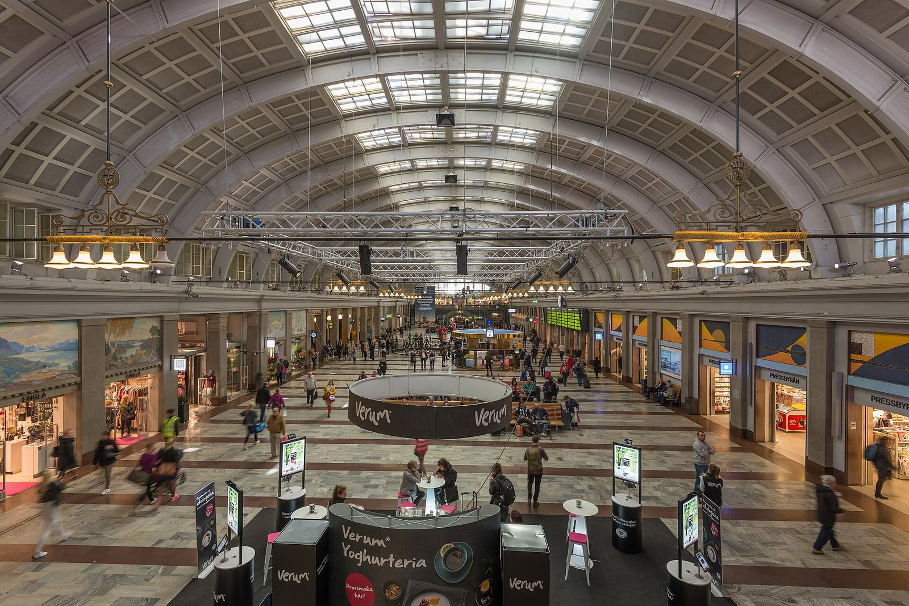

Kundservice
Svar på vanliga frågor, trafikläget och hur du når oss. Chattassistenten i chatten svarar dygnet runt.
Trafikinformation
Så kan trafikläget visas, med det viktigaste först: vad som händer och vad du ska göra.
Exempel. Avgångarna och störningarna här är inte riktiga.
Stockholm CGöteborg C 07.10
Försenat cirka 20 min
Signalfel vid Katrineholm. Vi räknar med att vara framme 10.31.
Malmö CStockholm C 09.25
Enligt tidtabell
Stockholm CNarvik 17.45
Inställt
Vi bokar om dig till nästa avgång och ersätter rimliga kostnader mot kvitto.
Vanliga frågor
Visar 19 av 19 frågor
Kan jag boka om min biljett?
Ja, om du har en biljett som kan ombokas. Då byter du till en annan dag eller tid på samma sträcka, mot en avgift. Är den nya resan dyrare betalar du mellanskillnaden, och är den billigare får du tillbaka skillnaden.
Kan jag få pengarna tillbaka om jag inte kan resa?
Har du en biljett som kan återbetalas får du tillbaka pengarna minus en avgift. En biljett som inte kan ombokas kan inte heller återbetalas.
Kan jag köpa biljett ombord?
Nej, köp biljetten innan du kliver på. Det enda undantaget är sträckan Luleå–Narvik.
Var kan jag köpa biljett?
På exempel.se, i appen, via resebyråer, hos Tågbolaget Kundservice och hos Pressbyrån och 7-Eleven. Våra kundvärdar på stationerna hjälper dig gärna att köpa och boka om i appen och på exempel.se.
Vad är sista minuten-biljetter?
Det är biljetter som släpps mindre än 24 timmar före avgång. De finns för studenter, ungdomar, barn och pensionärer.
Vilka rabatter finns?
Studenter och ungdomar upp till 25 år får alltid 15 % i 2 klass, och pensionärer 10 %. Barn 0–15 år får 15 %.
Vad får jag om tåget är försenat?
Kör tåget 150 km eller längre får du 25 % av biljettpriset vid minst 60 minuters försening och 50 % vid minst 120 minuter. På kortare sträckor får du 50 % vid 20 minuter, 75 % vid 40 minuter och 100 % vid 60 minuter.
Hur ansöker jag om förseningsersättning?
Fyll i formuläret på exempel.se. Ungefär hälften av ansökningarna behandlas automatiskt, och i snitt får du svar och pengar inom 2,5 arbetsdagar.
Vad händer om mitt tåg ställs in?
Vi bokar om dig till ett annat tåg eller sätter in buss eller taxi. Avbryts resan betalar vi tillbaka, och rimliga kostnader ersätter vi mot kvitto.
Finns det wifi ombord?
Ja, wifi är gratis på Snabbtåg 200, Snabbtåg 3000 och dubbeldäckarna. Anslut till nätet Tågbolaget. På nattåget beror det på avgången.
Vad är 2 klass Lugn?
En tystare vagn på snabbtågen. Mobilen står på ljudlöst och samtal hålls dämpade. Wifi och kaffe och te från bistron ingår. Barnrabatt och barnerbjudanden gäller inte här.
Hur bokar jag ledsagning?
Boka ledsagning senast 24 timmar före avresan via Samtrafikens ledsagningsportal.
Får jag ta med hund eller katt?
Ja. Boka en plats med ”Djur tillåtet”. Djur får bara vara i djurvagnar eller djuravdelningar, och på nattåget i särskilda djurkupéer. Ledarhundar och assistanshundar får följa med även i andra delar av tåget. Boka platsen via Kundservice.
Jag är allergisk. Kan jag boka en djurfri plats?
Ja, du kan boka en djurfri plats i både 1 och 2 klass på dagtåg.
Får jag ta med cykel?
En hopfällbar cykel ska vara ihopfälld och ligga i en väska i bagageutrymmet vid vagnens ände. De renoverade dubbeldäckarna och de nya tågen får egna cykelplatser.
Får barn resa ensamma?
Barn till och med 6 år får inte resa ensamma.
Hur fungerar familjeerbjudandet?
Upp till två barn 0–15 år får 85 % rabatt i 2 klass på dagtåg och 50 % på nattåg när de reser med dig.
Hur samlar jag poäng i Prio?
Du tjänar poäng på dina resor och hos våra partner. Poängen kan du använda till nya resor eller reserelaterade upplevelser, eller skänka till Tågbolagets ideella partner.
Jag är inte nöjd med svaret på min reklamation. Vad gör jag?
Skriftliga reklamationer hanteras inom 7 dagar. Är du inte nöjd med beslutet kan du överklaga till Tågbolagets kundombudsman.
Kontakta oss
Chatt
Chattassistenten svarar via Hjälp på exempel.se. Behöver du mer hjälp tar en medarbetare över.
Dygnet runt
Telefon
Måndag–fredag 08–17. Vid trafikstörning och för dig med funktionsnedsättning 06–22, tonval 5.
E-post
Skriftliga reklamationer hanteras inom 7 dagar.
På stationen
Våra kundvärdar hjälper dig att köpa och boka om i appen och på exempel.se.
Fakturafrågor för privatkunder
Prio Mastercard
SEB Kort, 08-14 74 20
Inte nöjd med beslutet?
Du kan överklaga till Tågbolagets kundombudsman.
Hittegods
Vi har hittegods i Stockholm, Göteborg och Malmö.
Växel, inte resefrågor